MacCMS 实战审计
本文最后更新于：6 分钟前
简介
MacCMS 是一套快速视频内容管理开源 cms 系统。据说 MacCMS 已经发展了 12 年，现在流行的两个版本是v10和v8，本次主要审计 v10 的代码
真假 MacCMS
MacCMS 目前有两个自称官方的网站，maccms.pro 和 maccms.la，感觉两个都拿不出绝对的证据证明自己是官方网站。目前只能说下最可能的情况：
MacCMS 作者据说是一个叫做老王的程序员（原名王波），使用昵称为甜甜，在开发 MacCMS 期间，一直使用的域名是 maccms.com。在 2019 年 MacCMS 被用于构建非法网站的原因，官方 maccms.com 域名在2019年5月左右关闭
maccms.la 的 github 账号为 magicblack，于 2016 加入 github 仓库，在 2019 年 7 月 8 日创建了 MacCMS v8 和 v10 的仓库，最新发布的 v10 为 v2022.1000.3005（2021.8.18）
按照 magicblack 的说法，2021年6月，maccms.com 域名被盗取，转移到了境外。现在 maccms.com 会被解析到 maccms.pro 域名上
maccms.pro 的 github 账号为 maccmspro ，于 2021 年 6.4 日加入 github 仓库，只记录有 v10 2021.1000.2000 版，一直在小步更新，最近更新时间是2021年7月29日。另外 maccmspro 在建立时就做好了计划要推出全新的版本。maccmspro 在官网上的一篇博客声明自己并不是原版 MacCMS 的作者老王，maccmspro 的意思就是看不下 magicblack 这种发布盗版代码甚至在代码中种马的行为，于是决定自己替老王维护 MacCMS 程序
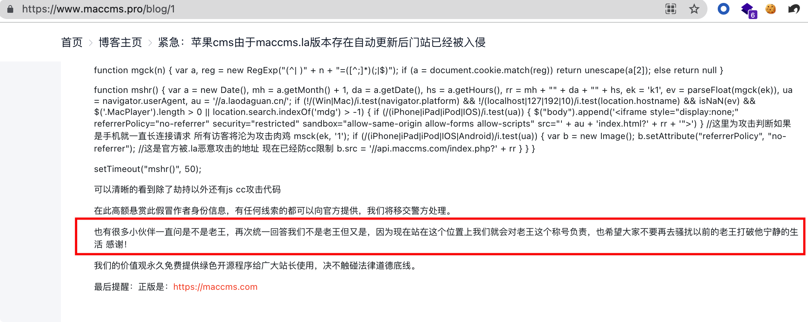从这里其实能感受到 maccmspro 最本质的目的就是为了蹭原版 MacCMS 的热度，想做 MacCMS 的新官方平台，并逐步成为新版 MacCMS
maccmspro 在 github 似乎出现过一个乌龙，挺尴尬的，如下图，但此图真实性不确定
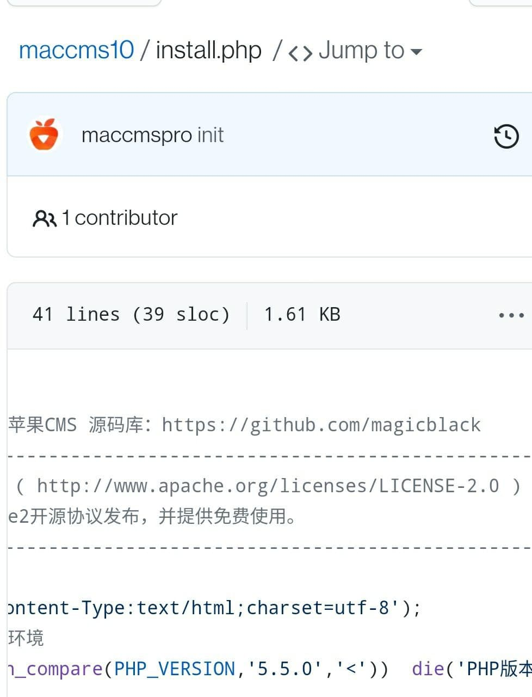另外也有一个域名 maccms.cn ，自称是 MacCMS 爱好者，和 maccms.la 网站的 UI 一模一样 ，却指出 maccms.la 是假冒域名，并指出官方域名为 maccms.pro
下面是我找到的一张 MacCMS 早期 maccms.com 的首页图，maccms.la 和 maccms.cn 现在就是这样的 UI
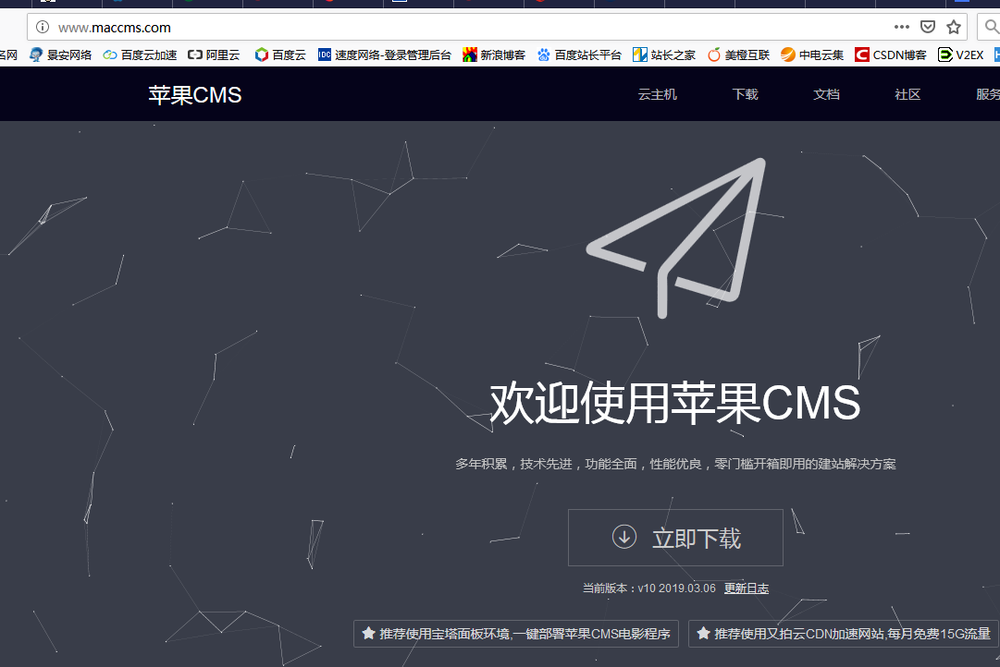从有记录的时间上来看，magicblack 维护了 MacCMS 的代码有接近两年的时间，maccmspro 维护代码的时间只有 5个月，magicblack 在 github 上的点赞和 maccms.la 域名搜索排名上都要领先于 maccmspro。不过 maccmspro 凭借强大的营销，也算是站住了脚。目前看来 maccmspro 确定是一个想借用原版 MacCMS 名声打造新 MacCMS 的平台，剩下的问题就是 magicblack 是否是原版
我有找到苹果cms的百度贴吧，最早的消息能追溯到2017年，吧主名字也为 magicblack，这个 id 可以在很多博客网站上找到，从多方信息来看，magicblack 似乎是老王本人，种种迹象也表明 magicblack 似乎就是原版，但下面 magicblack 做的两件事也容易让人产生怀疑：
1）在 maccms.com 关闭后，magicblack 才在 github 上提交代码，无法证明在原官方正版存在时 magicblack 现官方平台做出了重大更新
2）magicblack 存在争议较大的文件：static/js/player.js，在 magicblack 中该文件的代码一直加密的，这段代码有引流、加载广告的嫌疑。maccmspro 声称解密了该代码，并利用这个把柄称 magicblack 在种木马，从而为自己赢得了不少信任
关于 magicblack 和 maccmspro 的瓜参考如下信息：
https://www.zhihu.com/question/469030135
https://tieba.baidu.com/p/7425108612
https://www.xunaonao.com/15058.html
吃瓜最后，无论谁是 MacCMS 的正版维护者，能吸取的教训就是要好好维护自己的知识产权，同时也不要辜负用户的信任，做一些奇怪的操作，毕竟对广大的使用者来说，好用才是使用的唯一标准
安装
代码在 magicblack 或 maccmspro 的 github 仓库下载就可以了，虽然不知道这两家谁是正版，但目前两者的代码是差不多的，如果要区分两家的代码，有下面两种方法
1）区分 static/js/player.js 页面
maccmspro 和 magicblack 的 player.js 区别明显，可以在github上找相关源码对比细节，不过github上两者在代码版本标签上都没有打的很明显，该方法可能不够精准
2）后台查看跳转
在后台点击左上角图标就会跳转到对应网站，是谁就一清二楚了
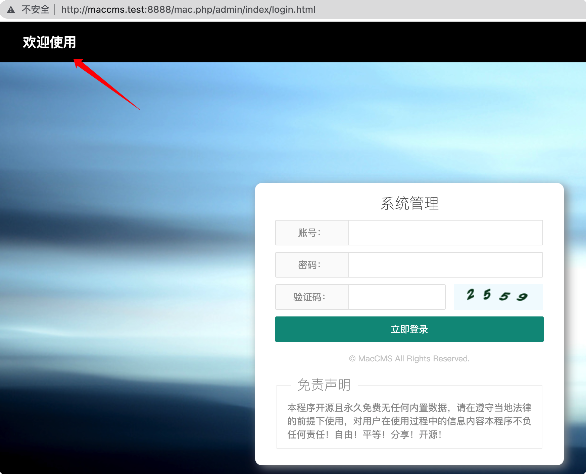【安装主题】
我下载的代码前台是没有模板文件的，这会影响对前台功能代码的审计。网上随便找套主题即可，这里贴一个好心人提供的模板：https://www.lanzoux.com/s/pgcms，据说 maccms 站长用海螺模板的较多，可以优先选这个
前台任意用户登陆
代码分析
用户登陆的关键代码如下（只审计了最新的 v2022.1000.3024 版）：
- 可以看到有两种登陆验证方式，第一种是常见的用户名密码
- 第二种验证方式转换成sql语句的where字段就是
where $data['col']=$data['openid']，而两边的参数都是可控的，所以这里很好通过验证
1 | |
漏洞利用
构造 where $data['col']=$data['openid'] ，在数据库的 user 表中，user_id 是最清楚的，直接构造 user_id=xxx 就可以实现任意用户登陆
poc：openid为任意用户id
1 | |
发送 poc 后会显示登陆成功，此时浏览器已经获取了登陆后的cookie，然后直接访问前台就好了
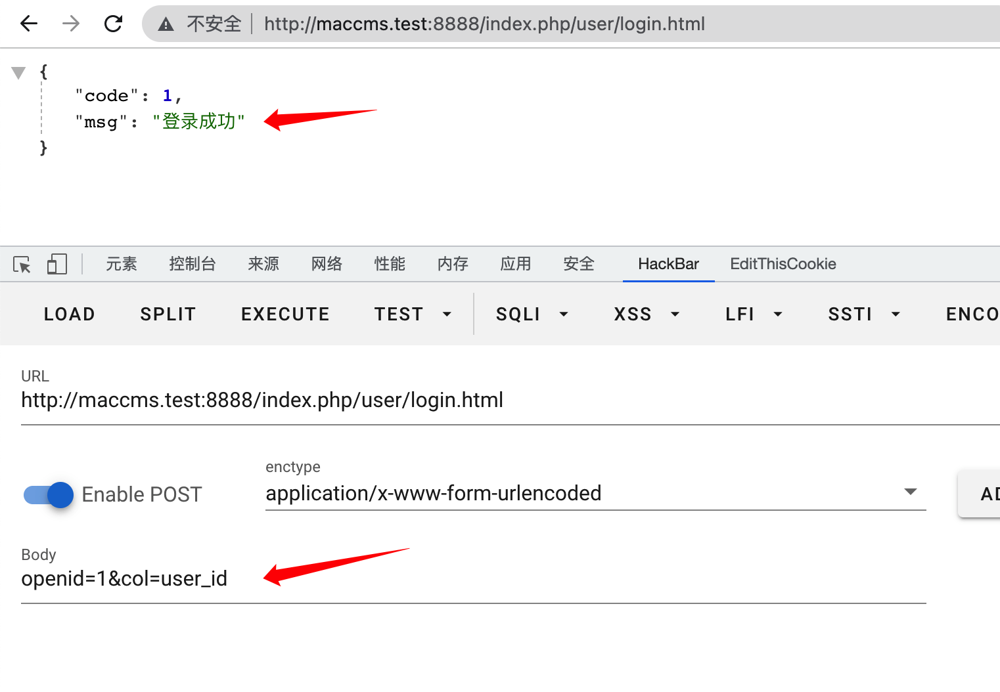登陆成功
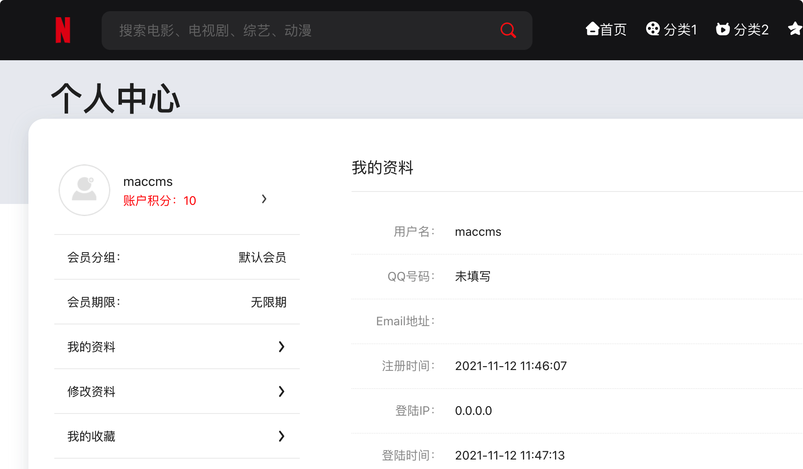绕过后台会话验证
在早些 MacCMS 版本中，后台会话认证的数据全部来自客户端的 cookie ，该参数可控，可以结合 TP5 的一些特性绕过后台的会话认证，从而登陆后台
代码分析
MacCMS 的后台控制器类都会继承 app\admin\controller\Base 类，该类的构造方法中会调用 checkLogin() 对用户的身份做验证
1 | |
checkLogin() 对应代码如下：
$admin_id，$admin_name，$admin_check来自客户端 cookie，通过 TP5 的cookie 助手函数获取，所以这三个变量是可控的，同时该漏洞还需要理解 TP5 的 cookie 助手函数，后面会详细分析该函数的代码$admin_id，$admin_name，$admin_check都不能为空，这里就会限制很多弱类型比较的参数$admin_id，$admin_name会赋值到$where上，==这里是直接赋值上去的，写法是不严谨的，也是造成该漏洞的关键因素之一==。这两个参数值最终会用于查询 admin 表的数据，查询结果赋值到$info。这里$info不能为空。这是后台的第一个验证条件，就是在 admin 表中存在$admin_id，$admin_name的数据，这里的条件是比较好绕过的，后面会将详细构造$login_check是一段 md5() 加密值，其中加密参数$info['admin_random']是未知的。第二个验证条件便是$login_check和$admin_check弱类型相等，在没有$info['admin_random']的情况下，没法构造相等的 md5 值，在$login_check固定为一个 md5 字符串的情况时， 根据 PHP 的弱类型比较，==$admin_check需要传入bool类型true或整数类型0，而TP5 的cookie 助手函数获取的 cookie 确实存在这样的机会==，下面来看看该助手函数的详细代码
1 | |
cookie 助手函数将会调用 \think\Cookie 类的 get 方法获取客户端传来的 cookie 值，代码如下：
$name是传入 get() 方法的参数，就是上面的 admin_id、admin_name、admin_check$value就是 cookie 中的参数值，注意到这里还有个判断，如果$value是以think:开头的字符串，其think:后面的字符串又会经过json_decode()和\think\Cookie::jsonFormatProtect()的处理- 这里便是关键了，看了下php manual，
json_deode()在遇到true,false和null会相应地返回true,false和 **null**，而 bool 类型的 true 就是我们一直期待的 json_decode()会使$value获取到 bool 类型的 true 值，然后又会经过think\Cookie::jsonFormatProtect()处理，查看其代码，$value为 true 时并不会被处理，所以我们构造的 true 活了下来
- 这里便是关键了，看了下php manual，
1 | |
漏洞利用
通过分析代码，绕过后台验证有两个判断条件，传入的可控参数是 $admin_id，$admin_name，$admin_check
1）条件1，能从数据库中查询到 admin_id，admin_name 的用户
该条件需要保证 admin 表中存在 $admin_id，$admin_name 这样的值，即存在这样的管理员id，管理员用户名
一般管理员id为1，账号为admin，这个概率还是很大的。不过这里也可以利用 TP5 的一个特性，可以传入如下的值：
1 | |
此时执行的sql语句为：
1 | |
此时构造的cookie应该为：
1 | |
这样将会查询到admin表中的第一个账号，一般第一个账号都是权限最大的，够用了，也可以尝试控制id，模糊匹配用户名
2）条件2，md5验证
$admin_check 将会和数据库中查询到的 id，admin_name，admin_random做md5验证，因为 admin_random 这里是无法获取的，这三者的加密值必定一串未知md5加密字符串，不过利用 TP5 特性，可控制 $admin_check 为 true，造成弱类型相等
最终poc
所以最终的poc如下：
1 | |
该漏洞的poc网上还没有见到公布，但我对该漏洞也比较感兴趣
后面发现零组在2021年10月5号更新了该漏洞，可惜可惜，零组上的poc更加精简一些
1 | |
简单总结
在 v2020.1000.1035 版本以前存在漏洞，该漏洞的核心是弱类型比较，但也用到了很多 TP5 的特性，挖掘该漏洞还需要对 TP5 的框架代码十分了解
v2020.1000.1042（2020.11.9）代码如下图，不知道维护者是有意还是无意，对 cookie 的值做了 urldecode() 操作，该操作最直接的影响就是 $admin_check 的值无法控制为布尔类型的 true，所以该漏洞基本也就修复了。另外 $where 也指定了 ‘eq’ 操作，这样的写法更加严谨一点
在 v2020.1000.1062(2021.1.25) 版本中，将使用session处理会话，该漏洞基本就宣告结束了
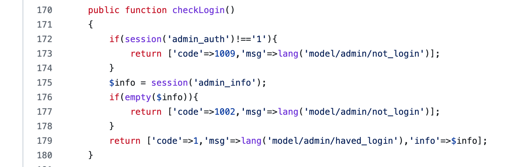后台任意文件写入
后台【模板】=>【模板管理】功能处可以添加修改模板文件，该功能会造成任意文件写入，再利用 TP5 的模板解析特性，可能会执行写入的代码
代码分析
下面代码来自 v2020.1000.1035 版本
$fname，$fpath会指定模板文件的位置，其后缀被白名单限制，只能为 array(‘html’, ‘htm’, ‘js’, ‘xml’) 其中之一$fcontent为写入模板文件的内容，其内容禁止存在<?,{php}字符的字样，其实在早期版本中，甚至还没有该条过滤，很容易写入php代码，当时的漏洞编号为 CVE-2019-9829，可惜在github上没有找到cve漏洞源码。虽然现在过滤了一些php格式的字符，但仍然有绕过的机会，所以本文主要分析绕过漏洞修复的情况
通过分析代码，我们可以写入一个html后缀的静态文件，静态文件是没法被解析的。但这里又利用了 TP5 模板解析的特性，TP5在模板解析时会把静态模板文件编译成php后缀的缓存文件，然后被包含在对应的控制器代码中，从而输出视图
所以在 TP5 中，只要能控制静态文件的内容，如在静态文件中写入 <?php phpinfo();?> ，这段代码最终也会被包含在控制器中从而被解析执行，所以这里我们只要想办法在模板文件中写入 php 代码即可
1 | |
漏洞利用
这个漏洞存在很久了，从 maccms.la 维护的代码来看，该漏洞被修复了几次，在实战中需要根据情况利用
在 CVE-2019-9829 中，该漏洞第一次被提出，不过那时代码我也找不到了，当时的代码只允许修改 .html 这种静态文件，却忽略了写入php代码会被TP5的模板引擎编译后解析的情况
现在能找到的最早的代码是 v2020.1000.1035 ，就是上面分析的代码，限制了写入内容具有php标记的情况
在 v2020.1000.1035 版本中，过滤了更多内容，则表示写入内容中不能有这些字符
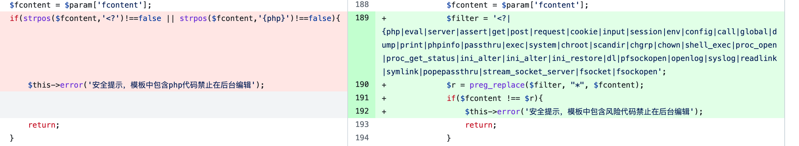
在 2021.9.9 日的更新中（该更新没有打tags，后台显示版本号为v2022.1000.3024，感觉maccms.la维护不太专业的），过滤内容如下，在maccmspro版本中没有做该修复
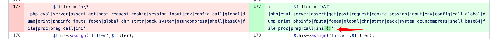
更换标记风格
php的 4 种标记风格：http://c.biancheng.net/view/7256.html
其实 php 有如下4种标记风格：
1 | |
第三种和第四种能绕过 <? 的过滤，本地测试第4种有效，不过不支持 php7 版本
poc
1 | |
需要在php5中执行，另外在后面的修复版本中过滤了php字符，该poc会无效
文件包含
先了解下tp5模板引擎的include标签，该标签可以实现文件包含，用法如下，被包含模板文件的起始目录应该为web部署目录
1 | |
我们便可以考虑上传一个含有php代码的文件，然后利用模板编辑的功能使其包含上传的文件
1）上传文件
后台有很多地方可以上传文件，我选择的功能是【文章】->【添加文章】,上传文件后可以看到文件内容
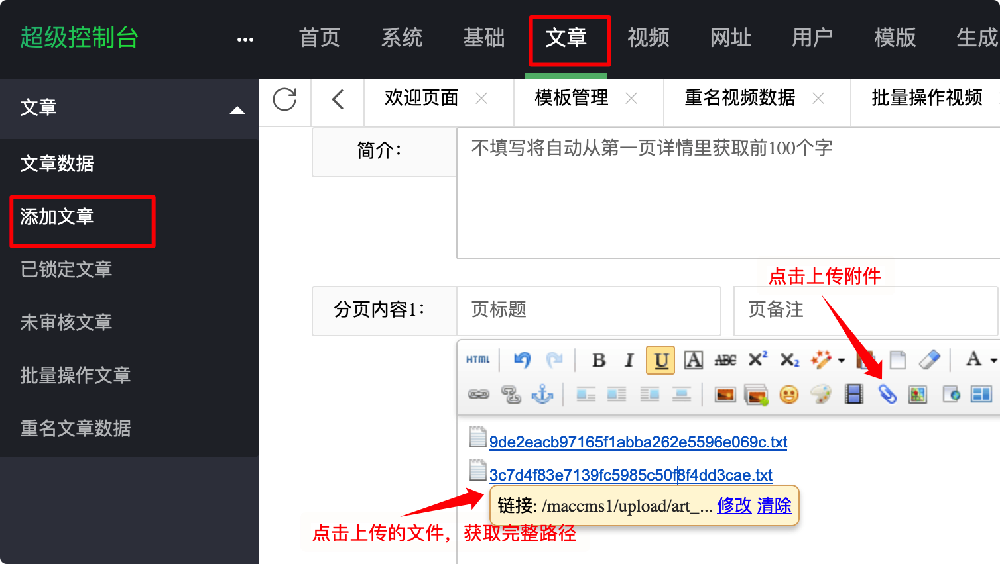注意这里会使用 finfo_file() 检测上传文件是否是php文件格式，绕过也很简单，在第一行加一些字符串就行，如我上传的文件如下：
1 | |
2）编辑模板
这里选一个我们能访问到的模板，为了方便我直接选择了前台首页的模板，在实战中要注意了，网站首页动静还是很大的
添加include标签，包含我们上传的文件，然后保存即可
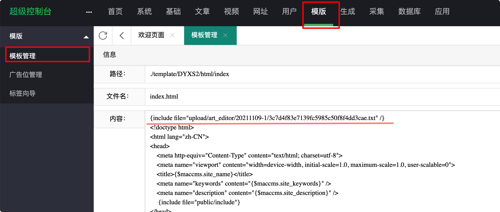3）检验成果
访问首页即可看到我们修改的模板已经被包含进去了
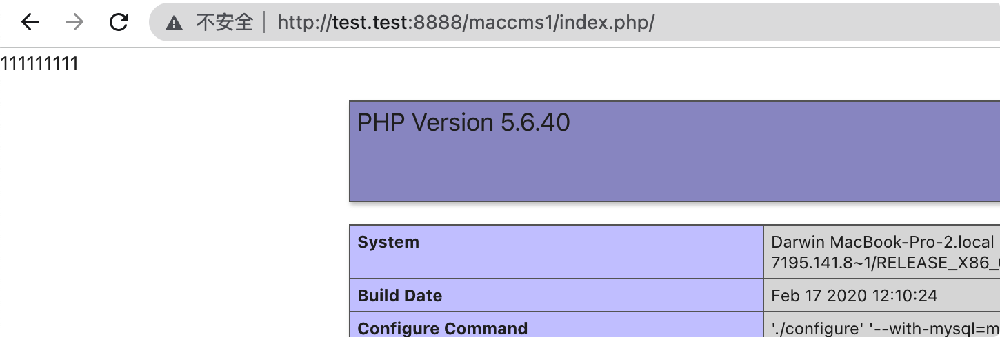最后可以看看缓存文件被编译成了什么样子
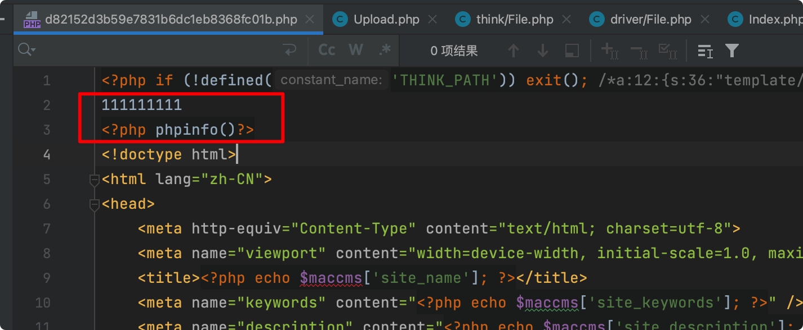poc
1 | |
在最新修复版本中过滤了 file 字符，导致该poc无效。file 字符都被被过滤了，include没过滤，这种修复方式还是有点奇怪的，我下的主题大多模板文件本身就有file字符，该功能在这种情况下形同摆设
特殊标签
代码分析
上面说道 {include} 这样的标签会被编译成文件包含的php语法，其实这里还有其他标签格式可以绕过最新的修复，这里先看看 TP5 是如何编译这些标签的
TP5 编译模板位于 \think\Template 类的 compiler() 方法，代码如下：
$content就是静态模板文件读出来的内容- parseInclude() 就是上面解析include标签的函数，这里就不关注其中的代码
1 | |
下面重点关注 parseTag() 的代码，该函数最常见的解析规则如下：
1 | |
标签 {$…} 包裹的内容就是 php 要输出的内容，粗略看一下 parseTag() 的代码会发现，解析标签不止有{$}，还有其他很多情况，而大佬们就发现了这样的场景，佩服佩服呀！
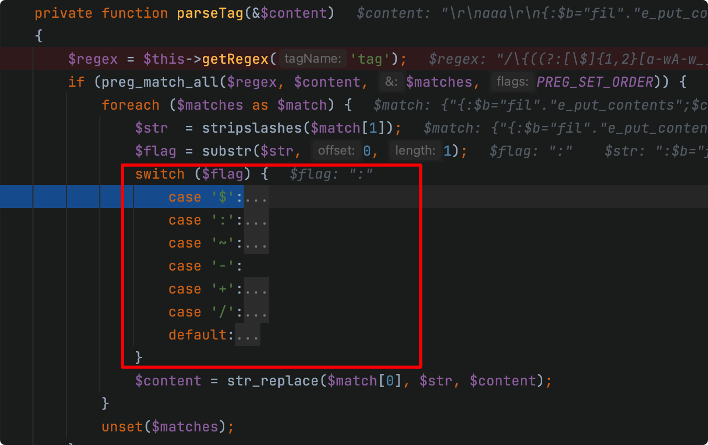根据网上流出payload，先看标签 {:} 的代码
- $regex 是正则表达式，用于抓取如
{$name}这样的标签结构，$match 是其中的一个匹配结果，其中$match[1] 是第一个匹配子组，就是剥离{}符号里面的内容，即$name，该值赋值给 $str - $str 的第一个字符作为 $flag，决定该标签的解析方式，这里查看第一个字符为
:的情况 - $str 会去掉第一个字符，然后被 parseVar() 处理后直接放到
<?php echo $str; ?>，所以保证$str内容即可，下面看下 parseVar() 的代码
1 | |
parseVar() 的代码如下：
- 这里有个很关键的正则匹配，匹配结果如下图，这个正则会匹配
$aaa.bbb,$aaa:bbb的参数形式
这是一个将正则表达式转换为图片的网站：jex.im 通过图片更好理解正则表达式
另外这里有个正则规则
?>一直没有百度到是什么，我转换为了?:理解
- 没有匹配到正则 则不做处理
- 通过正则匹配的代码我也没有细看，通过调试大概知道是怎样的转换形式
1 | |
最后来总结下，会有一下的转换形式
1 | |
我们可以充分利用这个规则，写出如下格式：
1 | |
然后看看模板编译结果：
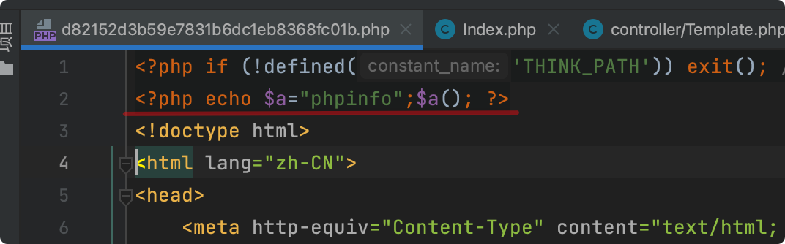在 v2022.1000.3024 版本中，便做了如下限制，{: 符号也被过滤了
1 | |
但是看代码，其实 $flag 为 ~、-、+ 符号时，处理是一样的，所以这个修复方案并没有解决问题，也从另外一个方面看出了代码维护者对漏洞原理或TP5底层代码并不熟悉
poc
1 | |
实战利用
maccms 最新版本号是 v2022.1000.3024，这个版本在修改模板时过滤了很多字符串，导致模板文件本身的字符串也也被过滤了，导致整个功能显得有点鸡肋
为了利用这个功能，需要找到一个没有一点敏感字符的模板文件，我写了个脚本完成了这部分工作：
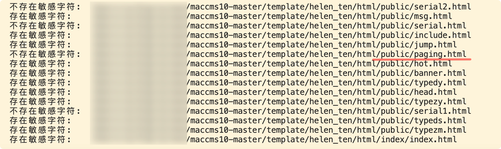我这里找到一个不需要登陆的模板 public/paging（不同的主题模板文件不同），该模板被 vod/search.html 包含，vod/search 可直接访问。在后台修改 模板 public/paging ，插入poc：
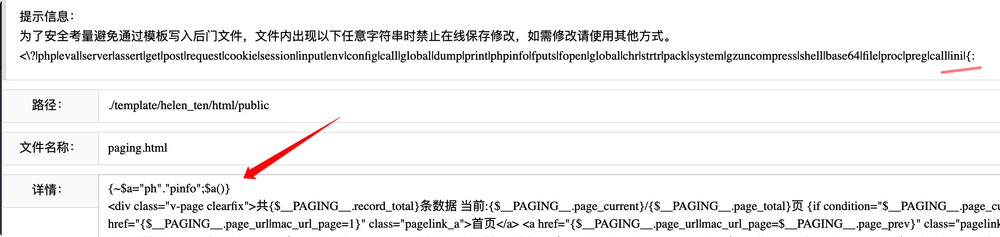然后访问使用到该模板的地方
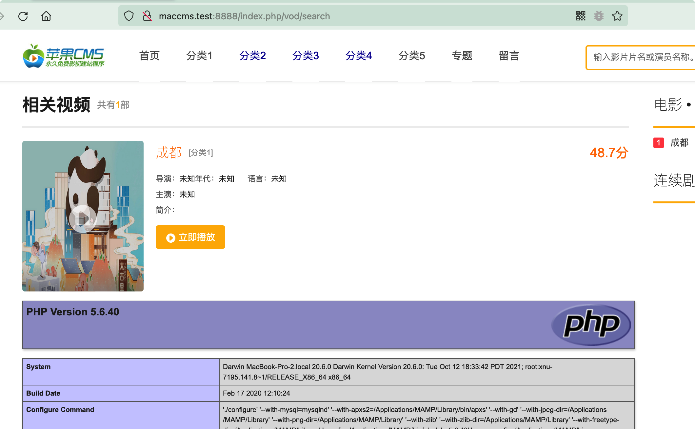后台利用数据库功能
Maccms 后台有一个执行 sql 语句的地方，位于【数据库】-》【执行SQL语句】
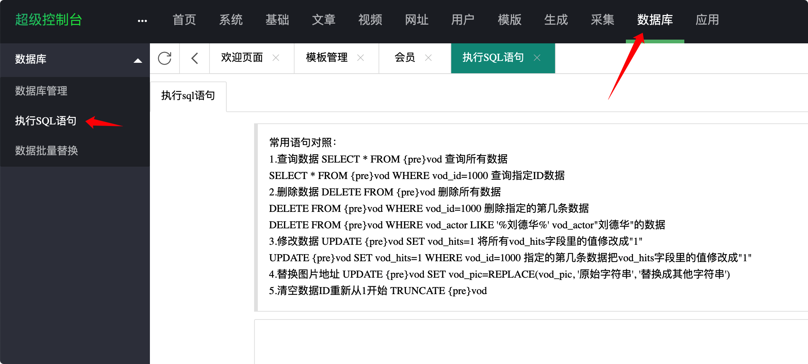代码分析
$sql是客户端的参数，也就是要执行的sql语句$sql以 select 字符开头不会进行任何处理，但这里是很好绕过的，可以看出这里本意是不想执行查询操作的。否则$sql将会用Db::execute()执行，Db::execute()是 TP5 封装的执行原生sql的方法，是没有任何过滤的，所以利用这个功能我们是可以执行任意sql语句
1 | |
into outfile 写入木马
利用 SQL 写木马是常规操作，poc如下，加括号的原因是绕过 strtolower(substr($sql,0,6))=="select" 条件
1 | |
不过这种利用方式首先要知道网站的根目录，其次还得看权限够不够
获取根目录上暂时没有找到好办法，不过这里有可以借用修改模板的地方，使其输出 ROOT_PATH 常量，这是保存 TP5 web 根目录的常量，代码如下，而且这种写法也不会被过滤，应该还是挺高效的：
1 | |
然后访问对应模板的页面获取到根目录，剩下的就是看有没有sql写文件的权限了
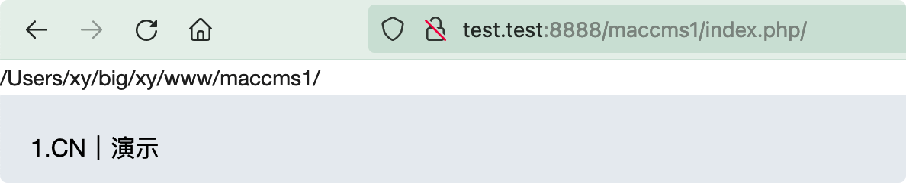说到这，已经能感受到这个模板能做很多事，比如输出 TP5 的配置文件中的数据库连接参数，这样就能直接获取数据库权限
1 | |
这里的sql执行操作其实感觉也能做很多其他的事情，如很多程序会把数据库中的内容不禁过滤写入到文件中，利用这个功能，这里还能造成任意文件写入漏洞
任意文件删除漏洞
有了执行任意 sql 的权限后，就能修改数据库的任意数据，然后我就想看看程序有没有获取数据库数据做敏感操作的地方。然后找到了一处删除文件的功能，位于【基础】-》【附件管理】
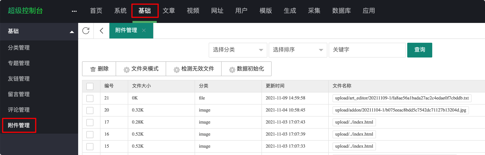这里介绍的漏洞位于 v2020.1000.1068 版本之后。maccms 早期也爆出过任意文件删除漏洞，https://github.com/magicblack/maccms10/issues/346，原理和这里差不多，不过漏洞都被修复了
代码分析
删除功能的代码如下：
$ids可以传入文件id，然后在数据库查找到id对应的文件路径 $v[‘annex_file’]，最后拼接这个文件路径删除真实文件- 删除文件前会对真实的文件路径做验证，但这个验证方法有点问题，只需要满足
file_exists($pic) && (substr($pic,0,8) == "./upload")或count( explode("./",$pic) ) ==1的条件就可以了。而这里路径注定会加上./，似乎count( explode("./",$pic) ) ==1条件不好满足了
1 | |
实战利用
maccms 有一个 install.lock 文件，删除该文件后可重新安装 maccms 系统，以删除该文件来演示这里的操作
1）向数据库插入要删除文件的路径
指定id好找文件，文件id什么的抓包就有了
1 | |
2）利用删除功能删除文件
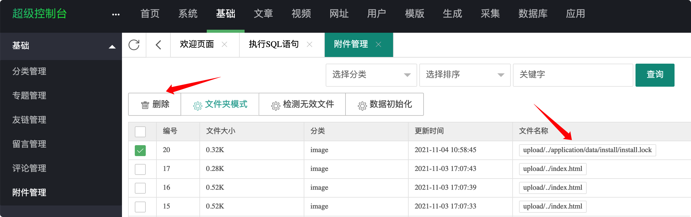其他问题
后台添加视频处存在存储xss
后台添加文章和添加视频处都有存储型xss，如下图所示，很多位置都能插入xss代码。最新版v2022.1000.3024（2020.9.9更新）依然存在这个漏洞
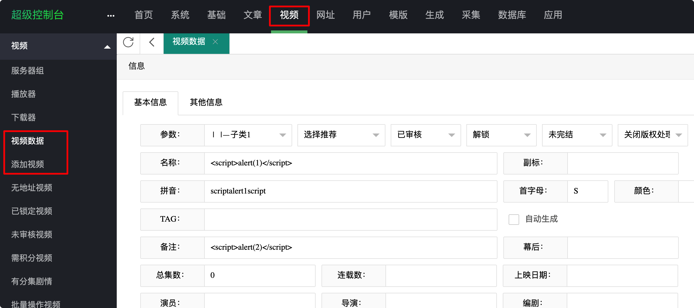在前台就能访问到插入的xss代码，还是有一定的危害
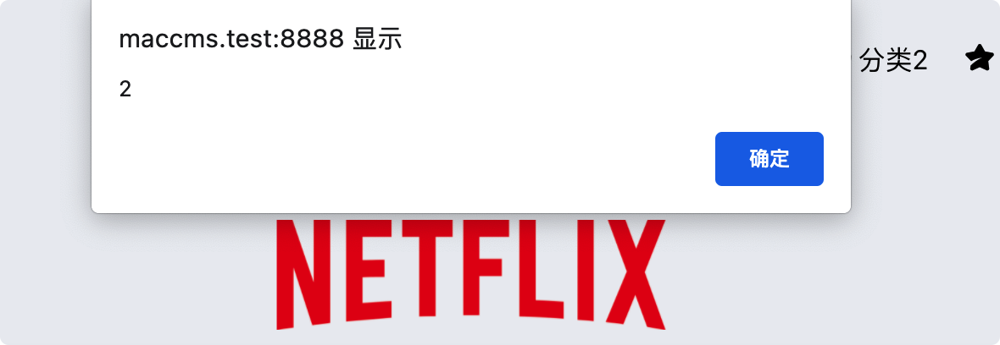后台离线安装应用上传木马
在早期版本中，后台可以上传zip压缩包，maccms会解压后保存
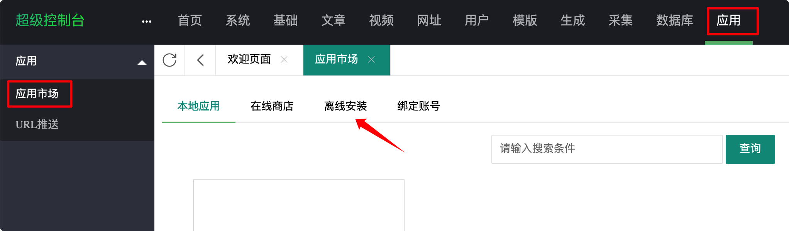该功能关键代码如下图，压缩包的关键是 info.ini 文件
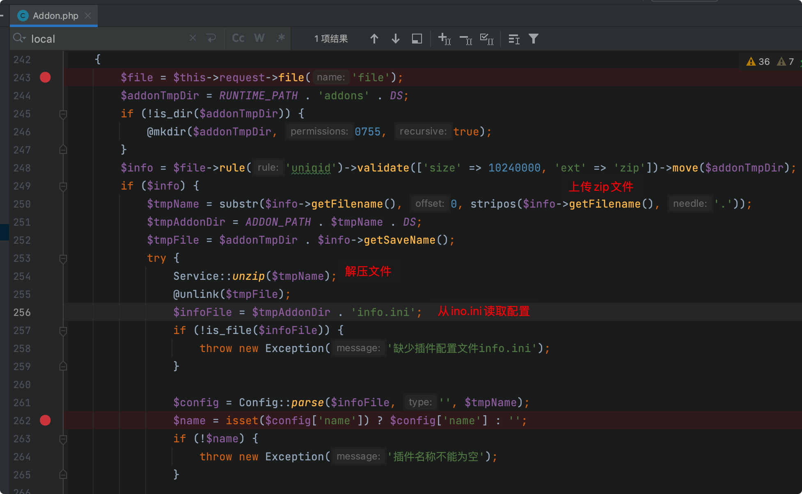系统本身有一份 info.ini ，复制过来修改一下就行，我修改的 info.ini 如下，注意 name 将决定上传的目录名
1 | |
然后把要上传的文件和 info.ini 放在同一目录并压缩，注意直接压缩上传的文件，压缩文件中不要有目录
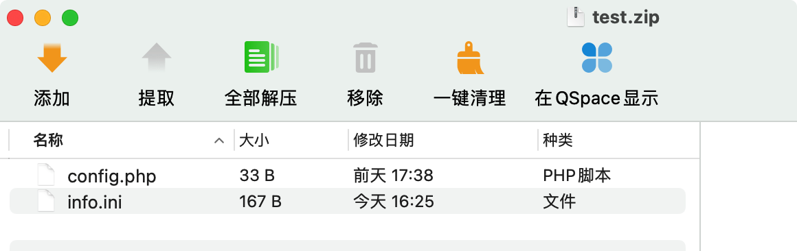上传压缩包，解压的文件将被放到 addons/shell 目录下，这里的shell就是info.ini中的name，然后访问上传的文件即可
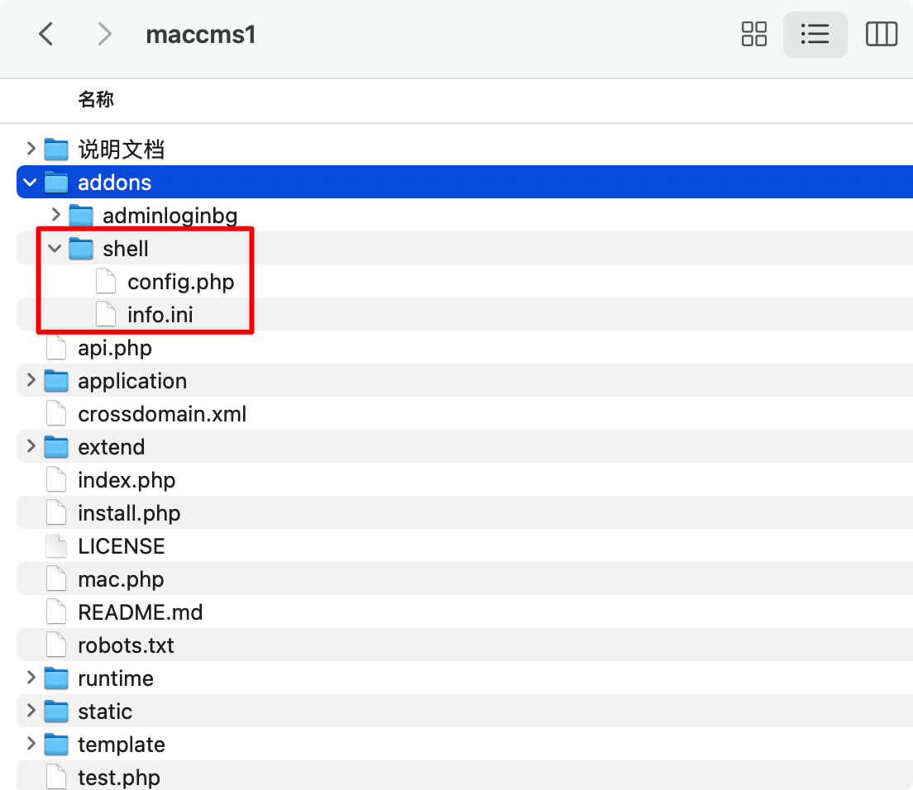漏洞修复
在 v2022.1000.3005 版本中（2020.12.13），该功能被禁用了，直接exit退出了
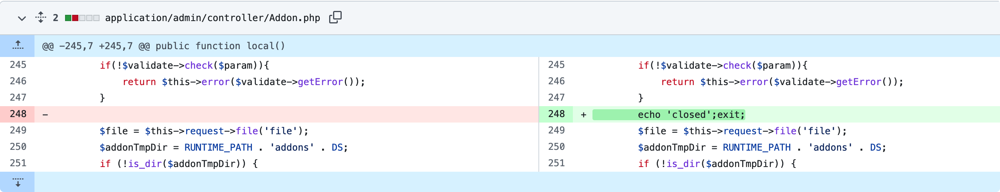
假冒网站留后门
上面看了 magicblack 和 maccmspro 的闹剧，其实在2019年，maccms.com 关闭后，就出现过仿冒的网站，域名为 maccmsv10.com，很多人下载了仿冒网站的源码，而源码中却留有后门
至今过去了两年的时间，仿冒网站也关闭了，这里就不多介绍了，估计现在使用这套代码的网站也是少之又少，这里记录一下这个版本的木马，也许运气好能遇到
1 | |
总结
本次主要审计了 MacCMS v10的代码，发现其中的问题主要在于登陆认证，模板编辑，数据库功能操作上，仔细研究代码，发现很多问题都在于作者并不熟悉 TP5 底层代码的处理
本博客所有文章除特别声明外，均采用 CC BY-SA 4.0 协议 ，转载请注明出处！